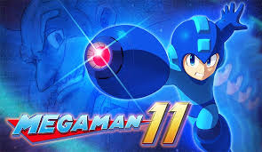
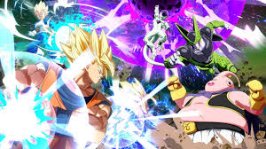

Mega Man 11 is an upcoming action-platform video game developed by Capcom, and is the twelfth main entry in the original Mega Man series. It is planned to be released in late 2018 for Microsoft Windows, Nintendo Switch, PlayStation 4, and Xbox One 
Final Fantasy XV protagonist Noctis is set to be the next playable DLC character in Tekken 7. The original announcement pegged him for a Spring 2018 release, and it turns out his arrival is right around the corner on PS4, Xbox One, and PC.
Bandai Namco has detailed the next update for Dragon Ball FighterZ. The patch is scheduled to roll out on PS4, Xbox One, and PC today, March 16, and it's primarily focused on making gameplay improvements, although it introduces a couple of new features as well. 